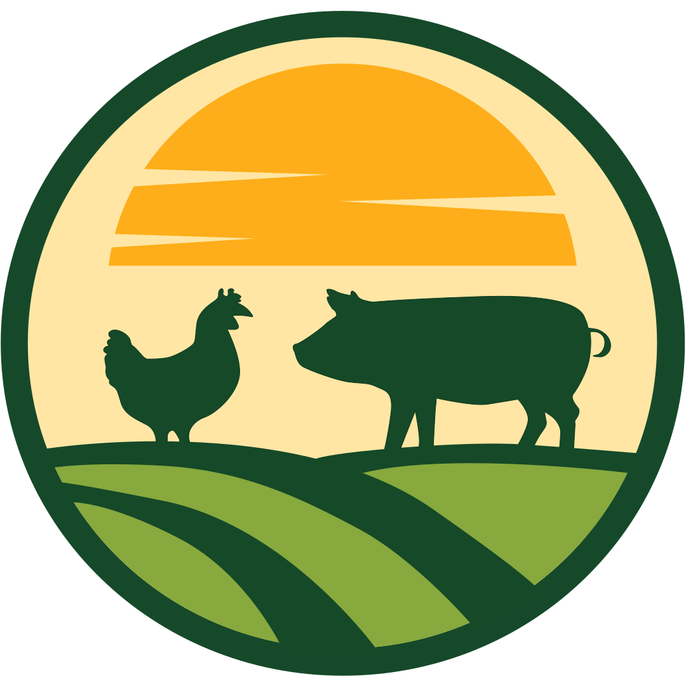

Ani-Grow™ Mobile App
Simple, Step-by-Step User Navigation Guide
App User Guide
Animal & Batch Management
A quick, visual guide on how to navigate the Animals pages, register livestock batches, log mortality, check growth curves, and review batch harvest history.
Guide Table of Contents
| Step | What You Will Learn in This Guide | Page |
|---|---|---|
| 01 | Navigating the Animals Screen & Housing Pens/Coops | Page 2 |
| 02 | Viewing Housing Details & Registering a New Batch | Page 3 |
| 03 | How to Log Deceased Animals (Mortality Recording) | Page 4 |
| 04 | Checking Daily Target Weight & Growth Curve Progress | Page 5 |
| 05 | Completing a Batch Harvest & Viewing Batch History | Page 6 |